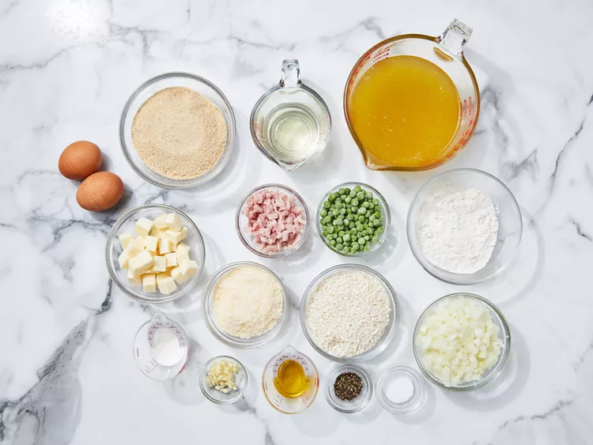

Gather all ingredients.
Preheat the oven to 200 degrees F (95 degrees C)
Heat 1 tablespoon olive oil in a large saucepan over medium heat. Add onion and garlic; cook and stir until onion is soft but not browned.
Pour in rice; cook and stir until lightly toasted, about 2 minutes.
Stir in wine; cook, stirring occasionally, until liquid has evaporated.
Add hot chicken stock to rice, 1/3 cup at a time, stirring and cooking until liquid has evaporated before adding more.
After all of the chicken stock has been added and absorbed, stir in peas and ham, then season with salt and pepper.
Remove from heat and stir in Parmesan cheese. Transfer risotto to a large bowl and allow to cool slightly.
Beat 1 egg in a small bowl; stir into risotto.
Beat remaining egg with milk in the same small bowl. Place flour in a second bowl; place bread crumbs in a third bowl.
For each ball, roll 2 tablespoons risotto into a ball. Press 1 mozzarella cube into the center and roll to enclose.
Coat lightly with flour, dip into milk mixture, then roll in bread crumbs to coat.
Heat 1 cup vegetable oil in a deep-fryer or large deep saucepan to 350 degrees F (175 degrees C).
Working in batches, fry rice balls in hot oil until evenly golden, turning as needed.
Drain on paper towel-lined plate and keep warm in the preheated oven.